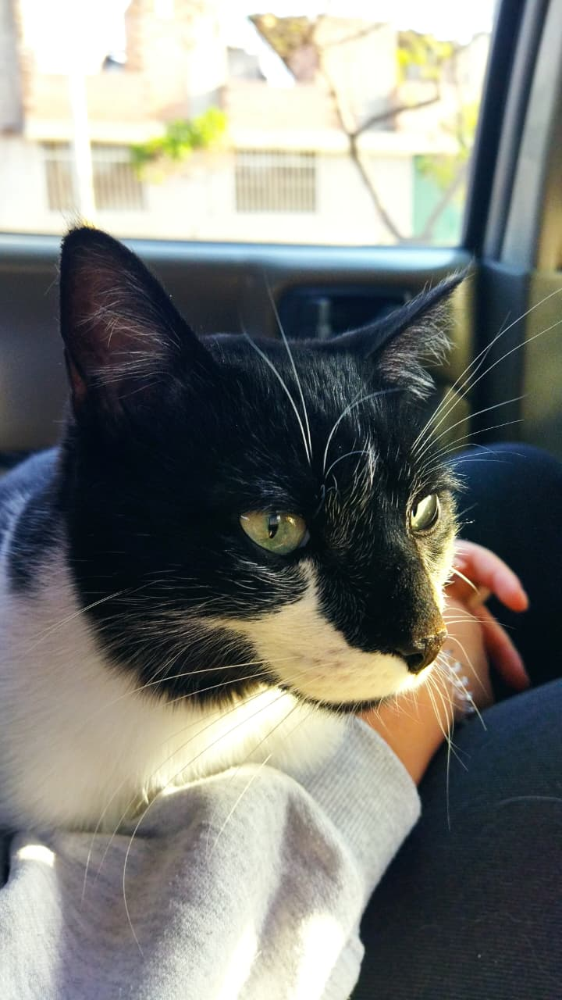

Este es Tomás

Tomás es mi gato, tiene 5 años. En esa foto estaba en su prime, ahora está gordo porque empezó a robarle la comida al perro.
Datos random míos
- Sé tocar flauta traversa
- Tomo bebidas sin azúcar, pero siempre con un postre a lado, para equilibrar
- Un talento inservible que tengo es poder mover las orejas
- Mi hermana dice que hablo cuando duermo... cuestionable
Hace un tiempo vi por primera vez Kill Bill. Ahora entiendo por qué es una película tan conocida y por qué tiene tantos seguidores. Leyendo algunas críticas, me llamó la atención que hay mucho apoyo hacia la rubia y su historia de venganza. Sin embargo, después de verla, no pude evitar pensar que Bill era en realidad, el verdadero romántico de la historia. Solo fue un hombre muy enamorado que se sintió traicionado por la persona que amaba y desde su punto de vista, intentó recuperar lo que había perdido. Tal vez sus métodos fueron un poquito cuestionables, pero al final, pobre Bill, nadie parece entender su lado de la historia.